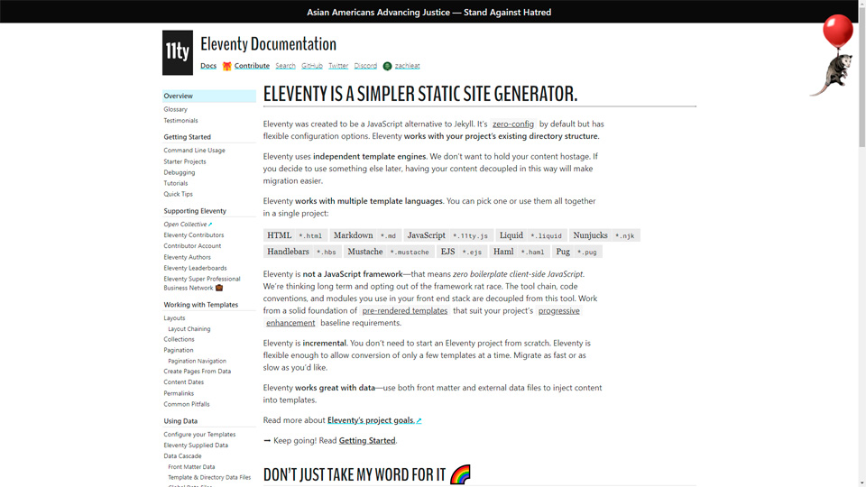
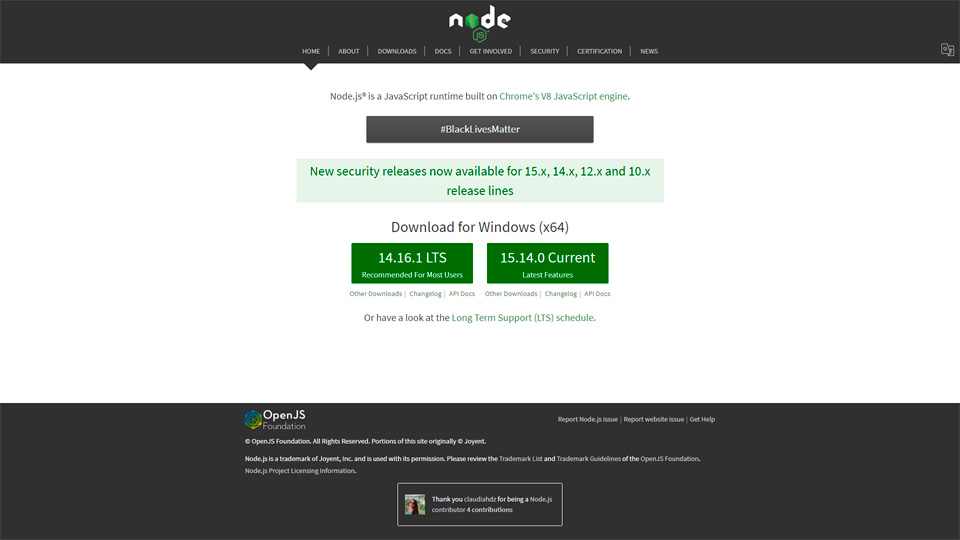
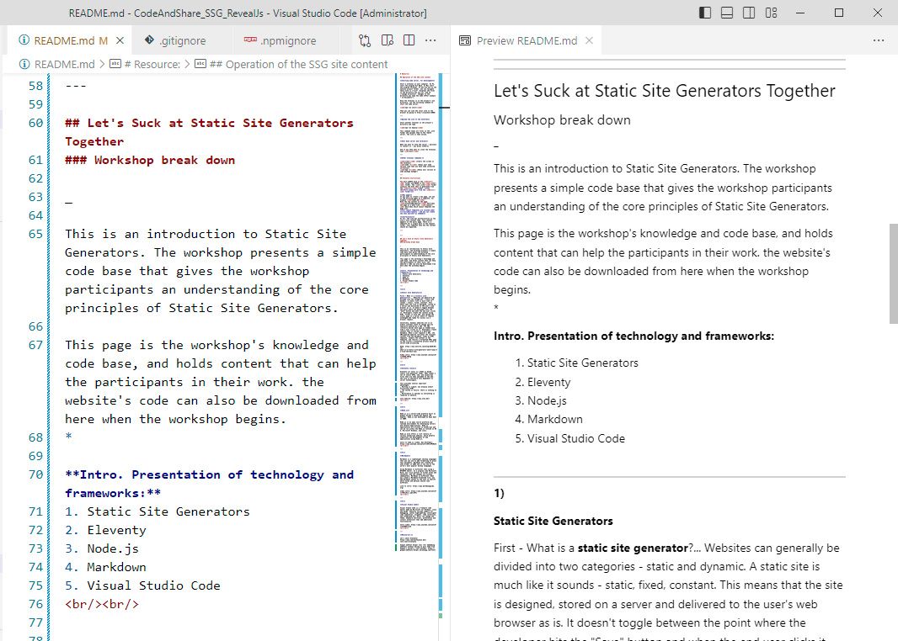

What I'll be trying today:
— Give everyone a sense of SSGs
— Explain why it's interesting to manage our own sites
— Set up a personal SSG site/app for all participants
Eleventy.js + Node.js + Markdown +
Visual Studio Code + Git + Gitlab Pages (devOps)
Go to the README.md file of the workshop repository
https://gitlab.com/personal1285309/codeandshare_ssg_eleventyjs
While I talk about the technology,
we'll download what we need ..
Websites can be separated in two categories:
Static and dynamic.
A static website is designed, stored as files on a server and delivered to the user's web browser as is.
Eleventy (11ty) is a Node.js based static site generator

Node.js is a server-side platform built on Google Chrome's JavaScript Engine (V8 Engine).
We'll use this to run 11ty and compile our code. 
Markdown is a lightweight markup language used to add formatting to plain text documents.

Visual Studio Code is a freeware code editor made by Microsoft for Windows, Linux and macOS.
We'll use git for software versioning, and Gitlab as host for our website. We'll take advantage of Gitlab's Continous Deployment functionality to build our site, as we update it.
Installation of Node
installation of Visual Studio Code
Installation og GitBach (only for windows)
Everyone sign up for Gitlab
When all is installed: Open a terminal and type
node -v(Later we'll clone this code: https://gitlab.com/personal1285309/codeandshare_ssg_eleventyjs)
ls
cd
code .
(Documents folder, or similar):
git clone
https://gitlab.com/personal1285309/codeandshare_ssg_eleventyjs
cd codeandshare_ssg_eleventyjs
ls
Login to your Gitlab account. Go to account preferences. Go to Choose Access Token .. and generate a new token
Now we can clone the repo ..
npm install
npm start

(Start the server, if it is not already running:
npm start)Anders introduces the simple logic around collections
Let's describe most of our content as collections...
What is the content? -and what types can it be divided into?
Let's discuss ...
Hvilke menu items do we have?
How is the content types related to the menu?
The site is minimalist in terms of design. This is typically a good starting point for a more distinct design of your choice. Let's look at the css together...
Add some content the site, change pages, tweak the css ...
Let's connect our site to the gitlab repo.
git initGo to your gitlab account, and make a "new project" ..
git remote add origin "The name of your repo"git remote -v
git add .git commit -m "initial"
git branch -M main
git push -u origin main
Coding Train (Dan Shiffman): Coding Train